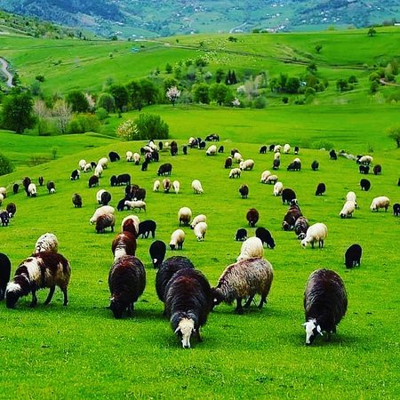
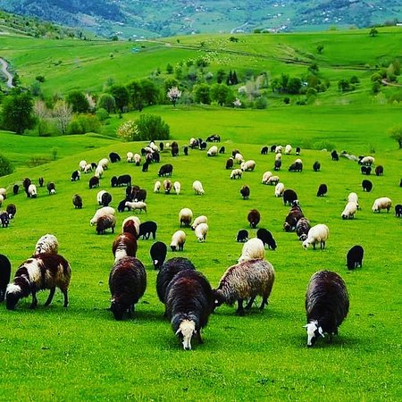

Naran-Kaghan
The Naran-Kaghan Valley of KPK is renowned for its history dated back to British Colonial period. Since the stone age to the current era, the region had inhabited several casts like Swati, Awan, Kashmiri, Durai, Mughal, and Quarish. The region is rich in terms of historical buildings and monuments. There are Buddhist temples and stupas, monuments of the Islamic period, Hindu’s and Sikh’s temples, Buddhist monasteries, and buildings of the Colonial period. Moreover, there are several folklores, archaeological graves, and different legendary buildings that are famous for their historical background. During your visit to Naran-Kaghan Valley of KPK, you can take your family to visit these historical graves and buildings. TourMover guide will definitely accompany you in exploring these sites.
Beautiful Images of Naran-Kaghan


 
